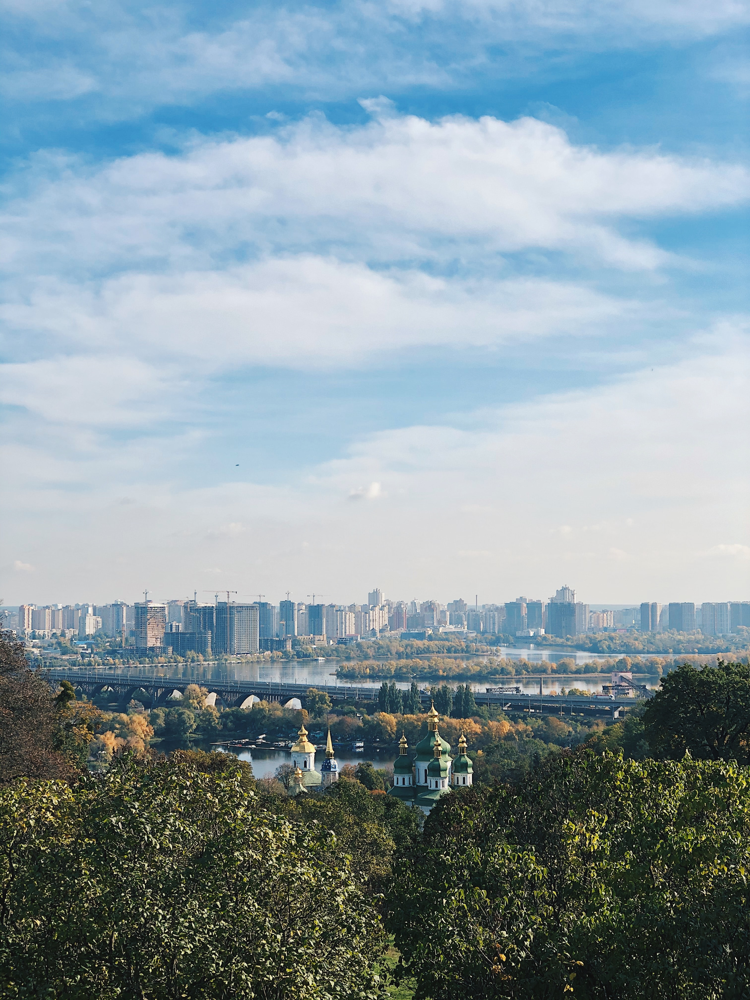
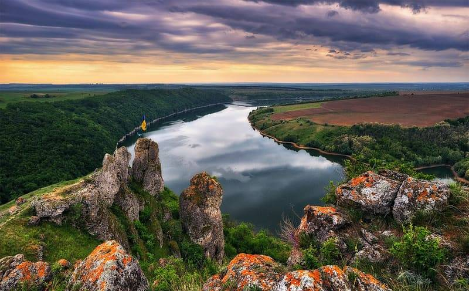

Природа Київської області
Пляж в Херсонській області

Дністер, Шишкові горби

Олешківські піски, Херсон
Природа України – багата та різноманітна. Завдяки географічному положенню та кліматичним умовам у нас є просторі степи й густі ліси, лагідні моря й величні гори, бурхливі річки та спокійні озера, на просторах країни ростуть тисячі видів рослин та водиться величезна кількість тварин. Змінюються пори року – і кожна з них дарує нам свою особливу красу.
Україна завжди асоціюється з безкраїми золотими ланами під чистим блакитним небом. Повний дозрілий колос пшениці символізує багатство та родючість, він важкий і хилиться до самої землі, ніби дякуючи за силу, якою вона його наповнила. Над ланами легко кружляють птахи, і далеко навкруги розноситься їхній спів.